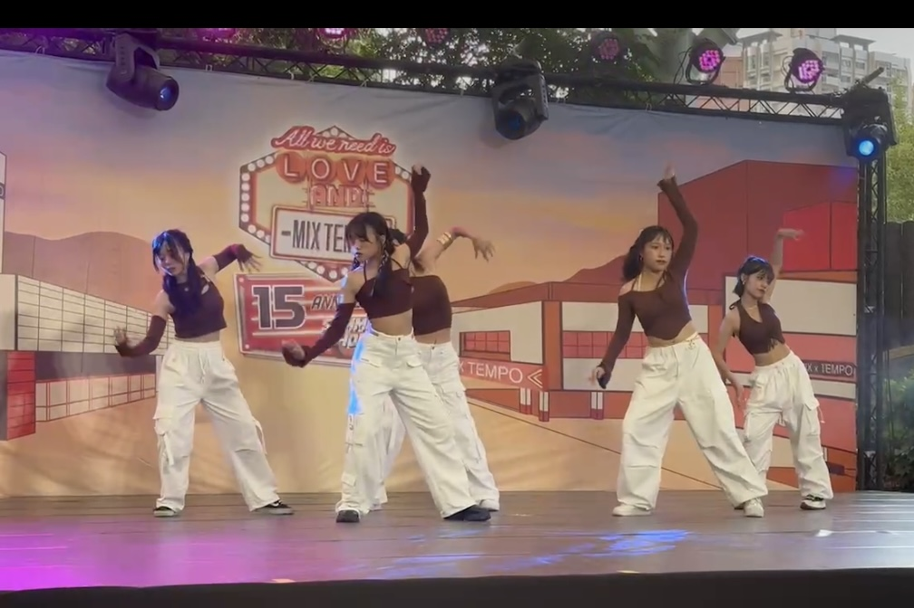
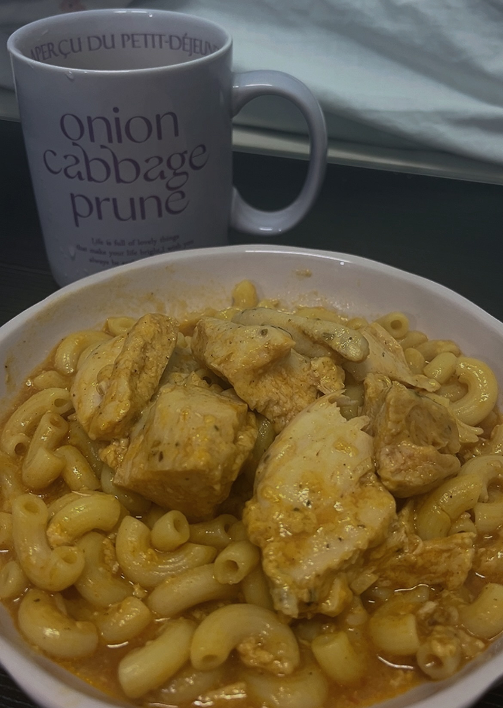

個人介紹
自我介紹
我是靜宜大學資料科學大數據分析與應用學系二年級林采諼。我的科系主要著重於資料分析、統計處理以及基礎程式設計，讓我們能夠運用邏輯與數據解決實際問題。在學期間，我學習了Python與R語言進行資料分析，並透過各種統計方法深入了解資料背後的意義。我對於從數據中發現趨勢與洞察特別有興趣，也持續培養自己在程式撰寫與邏輯思維方面的能力。未來希望能將所學應用於資料科學領域，解決更複雜的問題，並創造實際價值!

興趣
跳舞💃🏻
我跳的舞風是Jazz ，跳舞讓我學會欣賞與檢視自己，更了解自己!跳舞的時候也會讓我很專注當下，可以短暫脫離壓力，也是我緩解壓力的方法
研究美妝影片💄
我喜歡看化妝師化妝學習不同的化妝技巧，化妝不僅可以讓人變漂亮還可以增加自信心，學習不同的化妝技巧也讓我更清楚自己適合什麼
烹飪🥘
我喜歡自己下廚煮來吃，煮出東西會很有成就感，自己煮也比較健康
爬蟲成果展示
爬蟲目標:使用 Selenium 瀏覽器自動化，打開 Solone 官網、點擊「熱銷排行」頁面，並從排行榜中讀取前 5 筆商品資料（產品名稱、價格）。
爬取網站:Solon官網